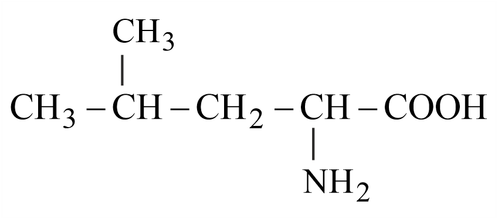

Filter questions
Q1
CHEM-2021-0101-S2-Q050
2021 | 16 Mar | Shift 2
—
MCQ
The secondary structure of protein is stabilised by:
Answer: C
Q2
CHEM-2021-0101-S2-Q052
2021 | 25 Feb | Shift 2
—
Integer
Five moles of an ideal gas at 293 K is expanded isothermally from an initial pressure of 2.1 MPa to 1.3 MPa against at constant external pressure 4.3 MPa. The heat transferred in this process is ___ kJmol−1. (Rounded-off to the nearest integer) mol−1 K−1 [ Use R = 8.314 J ]
Answer: 3
Q3
CHEM-2021-0101-S1-Q041
2021 | 25 Jul | Shift 1
—
MCQ
Which one of the following species responds to an external magnetic field?
Answer: A
Q4
CHEM-2021-0101-S2-Q042
2021 | 25 Jul | Shift 2
—
MCQ
Match List I with List II: (Both having metallurgical terms) List-I List-II Concentration of Ag
Answer: A
Q5
CHEM-2021-0101-S2-Q054
2021 | 25 Jul | Shift 2
—
Integer
A system does 200 J of work and at the same time absorbs 150 J of heat. The magnitude of the change in internal energy is ______ J. (Nearest integer)
Answer: 50
Q6
CHEM-2021-0101-S2-Q052
2021 | 26 Aug | Shift 2
—
Integer
For water Δvap H = 41 kJ mol−1 at 373 K and 1 bar pressure. Assuming that water vapour is an ideal gas that occupies a much larger volume than liquid water, the internal energy change during evaporation of water is (kJmol−1): [ Use: R = 8.3 J mol−1 K−1]
Answer: 38
Q7
CHEM-2021-0101-S1-Q050
2021 | 27 Aug | Shift 1
—
MCQ
Out of following isomeric forms of uracil, which one is present in RNA?

Answer: A
Q8
CHEM-2021-0101-S2-Q049
2021 | 27 Aug | Shift 2
—
MCQ
Which one of the following tests used for the identification of functional groups in organic compounds does not use copper reagent?
Answer: A
Q9
CHEM-2021-0101-S1-Q050
2021 | 27 Jul | Shift 1
—
MCQ
The compound ′A′ is a complementary base of.......... in DNA strands.
Answer: C
Q10
CHEM-2022-0101-S1-Q060
2022 | 26 Jun | Shift 1
—
Integer
The number of oxygen present in a nucleotide formed from a base, that is present only in RNA is

Answer: 9
Q11
CHEM-2022-0101-S2-Q054
2022 | 26 Jun | Shift 2
—
Integer
A fish swimming in water body when taken out from the water body is covered with a film of water of weight 36 g. When it is subjected to cooking at 100 °C, then the internal energy for vaporization in kJmol−1 is integer] [Assume steam to be an ideal gas. Given ΔvapH⊖ for water at and bar is 373 K 1 41.1 kJ mol−1: R = 8.31 J K−1 mol−1 ]
Answer: 38
Q12
CHEM-2022-0101-S2-Q053
2022 | 28 Jun | Shift 2
—
Integer
For combustion of one mole of magnesium in an open container at 300 K and 1 bar pressure, ΔCH⊖= −601.70 kJ mol−1, the magnitude of change in internal energy for the reaction is kJ. (Nearest integer) K−1 mol−1 (Given: R = 8.3 J )
Answer: 600
Q13
CHEM-2022-0101-S1-Q031
2022 | 29 Jun | Shift 1
—
MCQ
Production of iron in blast furnace follows the following equation Fe3 O4(s) + 4 CO(g) →3 Fe(l) + 4 CO2(g) when 4.640 kg of Fe3 O4 and 2.520 kg of CO are allowed to react then the amount of iror (in g ) produced is: [Given: Molar Atomic mass (gmol−1): Fe = 56 Molar Atomic mass (gmolm−1): O = 16 Molar Atomic mass (gmolm−1): C = 12 ]
Answer: C
Q14
CHEM-2022-0101-S1-Q050
2022 | 29 Jun | Shift 1
—
MCQ
Sugar moiety in DNA and RNA molecules respectively are
Answer: C
Q15
CHEM-2022-0101-S2-Q050
2022 | 29 Jun | Shift 2
—
MCQ
The structure of protein that is unaffected by heating is:
Answer: C
Q16
CHEM-2023-0101-S1-Q060
2023 | 08 Apr | Shift 1
—
Integer
Sulphur (S) containing amino acids from the following are: (a) isoleucine (b) cysteine (c) lysine (d) methionine (e) glutamic acid (1) b, c, e (2) a, b, c (3) b, d (4) a, d

Answer: 11
Q17
CHEM-2023-0101-S2-Q050
2023 | 13 Apr | Shift 2
—
MCQ
The naturally occurring amino acid that contains only one basic functional group in its chemical structure is
Answer: A
Q18
CHEM-2023-0101-S1-Q034
2023 | 24 Jan | Shift 1
—
MCQ
Match Column I with Column II Column I Column II A Soda ash I CaSO4 B Chlorophyll II CaOH2 C Used in Whitewashing III Na2CO3 D Dentistry, ornamental work IV Mg2 + ions
Answer: A
Q19
CHEM-2023-0101-S1-Q040
2023 | 24 Jan | Shift 1
—
MCQ
Match List I with List II. List I List II A. Reverberatory furnace I. Pig iron B. Electrolytic cell II. Aluminium C. Blast furnace III. Silicon D. Zone refining furnace IV. Copper
Structured List-I / List-II view
| Label | List-I | List-II | Match |
|---|---|---|---|
| A | Reverberatory furnace | Pig iron | I |
| B | Electrolytic cell | Aluminium | II |
| C | Blast furnace | Silicon | III |
| D | Zone refining furnace | Copper | IV |
Answer: A
Q20
CHEM-2023-0101-S1-Q054
2023 | 24 Jan | Shift 1
—
Integer
Uracil is base present in RNA with the following structure. % of N in uracil is _______.

Answer: 25
Q21
CHEM-2023-0101-S1-Q042
2023 | 25 Jan | Shift 1
—
MCQ
A cubic solid is made up of two elements X and Y. Atoms of X are present on every alternate corner and one at the center of cube. Y is at 1 rd of the total faces. The empirical formula of the compound is 3
Answer: C
Q22
CHEM-2023-0101-S1-Q060
2023 | 29 Jan | Shift 1
—
Integer
Number of cyclic tripeptides formed with 2 amino acids A and B is: (1) 2 (2) 3 (3) 5 (4) 4
Answer: 0
Q23
CHEM-2023-0101-S2-Q060
2023 | 29 Jan | Shift 2
—
Integer
Following tetrapeptide can be represented as ( F, L, D, Y, I, Q, P are one letter codes for amino acids) (1) FIQY (2) FLDY (3) YQLF (4) PLDY
Answer: 4
Q24
CHEM-2023-0101-S1-Q040
2023 | 30 Jan | Shift 1
—
MCQ
In the extraction of copper, its sulphide ore is heated in a reverberatory furnace after mixing with silica to:
Answer: D
Q25
CHEM-2023-0101-S1-Q052
2023 | 30 Jan | Shift 1
—
Integer
When 2 litre of ideal gas expands isothermally into vacuum to a total volume of 6 litre, the change in internal energy is _____ J. (Nearest integer)

Answer: 0
Q26
CHEM-2023-0101-S1-Q050
2023 | 31 Jan | Shift 1
—
MCQ
A protein ‘X’ with molecular weight of 70, 000 u, on hydrolysis gives amino acids. One of these amino acid is

Answer: B
Q27
CHEM-2023-0101-S2-Q051
2023 | 31 Jan | Shift 2
—
Integer
Which one of the following statements is incorrect? (1) van Arkel method is used to purify tungsten. (2) The malleable iron is prepared from cast iron by oxidising impurities in a reverberatory furnace. (3) Cast iron is obtained by melting pig iron with (4) Boron and Indium can be purified by zone scrap iron and coke using hot air blast. refining method.

Answer: 227
Q28
CHEM-2024-0101-S1-Q050
2024 | 01 Feb | Shift 1
—
MCQ
If one strand of a DNA has the sequence ATGCTTCA, sequence of the bases in complementary strand is:
Answer: B
Q29
CHEM-2024-0101-S2-Q060
2024 | 01 Feb | Shift 2
—
Integer
The number of tripeptides formed by three different amino acids using each amino acid once is _______.

Answer: 6
Q30
CHEM-2024-0101-S1-Q036
2024 | 05 Apr | Shift 1
—
MCQ
The following reaction occurs in the Blast furnance where iron ore is reduced to iron metal Fe2O3( s) + 3CO(g) ⇌Fe(l) + 3CO2( g) Using the Le-chatelier's principle, predict which one of the following will not disturb the equilibrium.
Answer: C
Q31
CHEM-2024-0101-S2-Q050
2024 | 05 Apr | Shift 2
—
MCQ
Coagulation of egg, on heating is because of:
Answer: B
Q32
CHEM-2024-0101-S1-Q050
2024 | 06 Apr | Shift 1
—
MCQ
DNA molecule contains 4 bases whose structure are shown below. One of the structures is not correct, identify the incorrect base structure.

Answer: B
Q33
CHEM-2024-0101-S2-Q053
2024 | 08 Apr | Shift 2
—
Integer
Δvap H⊖ for water is +40.79 kJ mol−1 at 1 bar and 100∘C. Change in internal energy for this vapourisation under same condition is kJmol−1. (Integer answer) (Given R = 8.3JK−1 mol−1 )
Answer: 38
Q34
CHEM-2024-0101-S2-Q060
2024 | 08 Apr | Shift 2
—
Integer
The total number of carbon atoms present in tyrosine, an amino acid, is _______
Answer: 9
Q35
CHEM-2024-0101-S1-Q060
2024 | 09 Apr | Shift 1
—
Integer
Total number of essential amino acid among the given list of amino acids is _______ Arginine, Phenylalanine, Aspartic acid, Cysteine, Histidine, Valine, Proline

Answer: 4
Q36
CHEM-2024-0101-S2-Q050
2024 | 27 Jan | Shift 2
—
MCQ
Which structure of protein remains intact after coagulation of egg white on boiling?
Answer: A
Q37
CHEM-2024-0101-S1-Q049
2024 | 29 Jan | Shift 1
—
MCQ
Type of amino acids obtained by hydrolysis of proteins is:
Answer: B
Q38
CHEM-2024-0101-S2-Q060
2024 | 30 Jan | Shift 2
—
Integer
The total number of correct statements, regarding the nucleic acids is _________. A. RNA is regarded as the reserve of genetic information. B. DNA molecule self-duplicates during cell division C. DNA synthesizes proteins in the cell. D. The message for the synthesis of particular proteins is present in DNA E. Identical DNA strands are transferred to daughter cells.
Answer: 3
Q39
CHEM-2025-0101-S1-Q034
2025 | 22 Jan | Shift 1
—
MCQ
Sliding contact of a potentiometer is in the middle of the potentiometer wire having resistance Rp = 1Ω as shown in the figure. An external resistance of Re = 2Ω is connected via the sliding contact. The electric current in the circuit is:

Answer: D
Q40
CHEM-2025-0101-S2-Q032
2025 | 22 Jan | Shift 2
—
MCQ
Given are statements for certain thermodynamic variables,
Answer: D
Q41
CHEM-2025-0101-S2-Q039
2025 | 22 Jan | Shift 2
—
MCQ
A series LCR circuit is connected to an alternating source of emf E. The current amplitude at resonant frequency is I0. If the value of resistance R becomes twice of its initial value then amplitude of current at resonance will be

Answer: C
Q42
CHEM-2025-0101-S1-Q036
2025 | 23 Jan | Shift 1
—
MCQ
LIST-I LIST-II A. Pressure varies inversely with volume of an ideal gas. I. Adiabatic process B. Heat absorbed goes partly to increase internal energy and partly to do work. II. Isochoric process C. Heat is neither absorbed nor released by a system. III. Isothermal process D. No work is done on or by a gas. IV. Isobaric process
Structured List-I / List-II view
| Label | List-I | List-II | Match |
|---|---|---|---|
| A | Pressure varies inversely with volume of an ideal gas. | Adiabatic process | I |
| B | Heat absorbed goes partly to increase internal energy and partly to do work. | Isochoric process | II |
| C | Heat is neither absorbed nor released by a system. | Isothermal process | III |
| D | No work is done on or by a gas. | Isobaric process | IV |
Answer: A
Q43
CHEM-2025-0101-S2-Q042
2025 | 23 Jan | Shift 2
—
MCQ
A circular disk of radius R meter and mass M kg is rotating around the axis perpendicular to the disk. An external torque is applied to the disk such that θ(t) = 5t2 −8t, where θ(t) is the angular position of the rotating disc as a function of time t. How much power is delivered by the applied torque, when t = 2 s?
Answer: D
Q44
CHEM-2025-0101-S2-Q059
2025 | 23 Jan | Shift 2
—
Integer
The α -Helix and β - Pleated sheet structures of protein are associated with its: (1) tertiary structure (2) quaternary structure (3) secondary structure (4) primary structure
Answer: 3
Q45
CHEM-2025-0101-S1-Q031
2025 | 24 Jan | Shift 1
—
MCQ
An ideal gas goes from an initial state to final state. During the process, the pressure of gas increases linearly with temperature. A. The work done by gas during the process is zero. B. The heat added to gas is different from change in its internal energy. C. The volume of the gas is increased. D. The internal energy of the gas is increased. E. The process is isochoric (constant volume process) Choose the correct answer from the options given below:
Answer: C
Q46
CHEM-2025-0101-S1-Q048
2025 | 24 Jan | Shift 1
—
MCQ
The temperature of 1 mole of an ideal monoatomic gas is increased by 50∘C at constant pressure. The total heat added and change in internal energy are E1 and E2, respectively. If E1 = x then the value of x is _____ E2 9
Answer: Option 15
Q47
CHEM-2025-0101-S1-Q052
2025 | 29 Jan | Shift 1
—
Integer
J of energy is transferred as heat to 0.5 mol of Argon gas at 298 K and 1.00 atm. The final temperature and the K−1 mol−1 change in internal energy respectively are: Given: R = 8.3 J (1) 378 K and 500 J (2) 368 K and 500 J (3) 348 K and 300 J (4) 378 K and 300 J

Answer: 3
Q48
CHEM-2025-0101-S2-Q060
2025 | 29 Jan | Shift 2
—
Integer
Identify the essential amino acids from below: (A) Valine (B) Proline (C) Lysine (D) Threonine (E) Tyrosine Choose the correct answer from the options given below: (1) (A), (C) and (E) only (2) (A), (C) and (D) only (3) (C), (D) and (E) only (4) (B), (C) and (E) only

Answer: 2